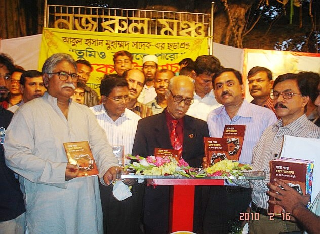

Dr. Ashish Kumar Chowdhury published a creative book in Bangla on acute abdomen with the inspiration Liberation War, 1971. The ceremony occurred in international Book Fair, Ekushey Mela , Dhaka, 2010. The inauguration ceremony was headed by National Professor N Islam and Honourable Parliament Member, Peoples’ republic Of Bangladesh Moin Uddin Khan Badal.
International Book Fair, Ekushey Mela , Dhaka, 2010.